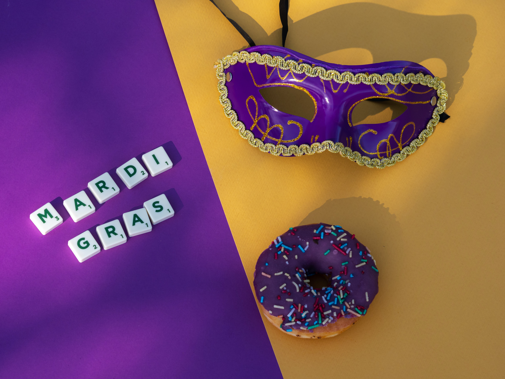

Mardi Gras in New Orleans
 The holiday of Mardi Gras is celebrated in all of Louisiana, including the city of New Orleans. Celebrations are concentrated for about two weeks before and through Shrove Tuesday, the day before Ash Wednesday (the start of lent in the Western Christian tradition). Usually there is one major parade each day (weather permitting); many days have several large parades. The largest and most elaborate parades take place the last five days of the Mardi Gras season. In the final week, many events occur throughout New Orleans and surrounding communities, including parades and balls (some of them masquerade balls).The parades in New Orleans are organized by social clubs known as krewes; most follow the same parade schedule and route each year. The earliest-established krewes were the Mistick Krewe of Comus, the earliest, Rex, the Knights of Momus and the Krewe of Proteus. Several modern "super krewes" are well known for holding large parades and events, such as the Krewe of Endymion (which is best known for naming celebrities as grand marshals for their parades), the Krewe of Bacchus (similarly known for naming celebrities as their Kings), as well as the Zulu Social Aid & Pleasure Club—a predominantly African American krewe. Float riders traditionally toss throws into the crowds. The most common throws are strings of colorful plastic beads, doubloons, decorated plastic "throw cups", Moon Pies, and small inexpensive toys. Major krewes follow the same parade schedule and route each year.
While many tourists center their Carnival season activities on Bourbon Street, major parades originate in the Uptown and Mid-City districts and follow a route along St. Charles Avenue and Canal Street, on the upriver side of the French Quarter. Walking parades - most notably the Krewe du Vieux and Chewbacchus - also take place downtown in the Faubourg Marigny and French Quarter in the weekends preceding Mardi Gras day. Mardi Gras day traditionally concludes with the "Meeting of the Courts" between Rex and Comus.
LaToya Cantrell
 LaToya Cantrell is an American politician serving as the Mayor of New Orleans, Louisiana, a post she has held since May 7, 2018. Cantrell, a Democrat, is the first woman to hold the post. Before becoming mayor, Cantrell represented District B on the New Orleans City Council from 2012–2018.
LaToya Cantrell is an American politician serving as the Mayor of New Orleans, Louisiana, a post she has held since May 7, 2018. Cantrell, a Democrat, is the first woman to hold the post. Before becoming mayor, Cantrell represented District B on the New Orleans City Council from 2012–2018. "As Mayor of the great City of New Orleans, I invite you to visit our city to experience the excitement of Mardi Gras!"
The Carnival season officially begins each year on Jan. 6 -- the Feast of the Epiphany, also called Twelfth Night or Kings’ Day. Traditional balls are held in the weeks leading up to the big
Spectacular parades with colorful, creative floats start rolling before Mardi Gras Day. Our private Carnival clubs, called krewes, take on royalty status and throw beads, doubloons and toys to parade goers. Visitors quickly learn to say, "Throw me something mister!"
The culmination of Mardi Gras in New Orleans begins early on Mardi Gras Day when the Zulu Social Aid & Pleasure Club and the Rex Organization parade through the city. Music, food and elaborate costumes add to the fun-filled day of excitement for revelers of all ages.
New Orleans, with its unmatched culture and world-famous music and cuisine, is an exciting place to be at any time of the year. We invite everyone to experience Mardi Gras at least once in their lifetime. Make your plans now to be a part of this great tradition and see firsthand why we say, "Laissez les bon temps rouler!"
Sincerely,
LaToya Cantrell
Mayor of New Orleans